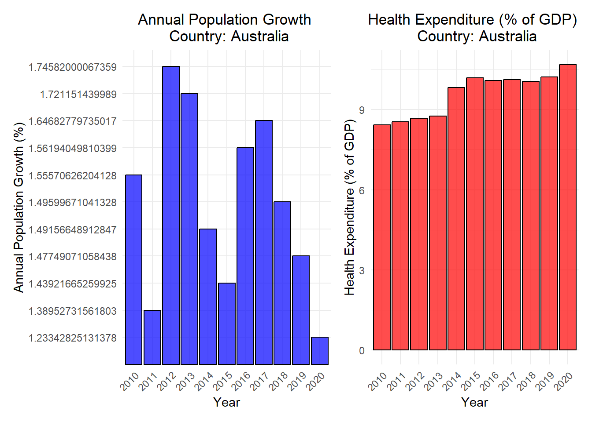
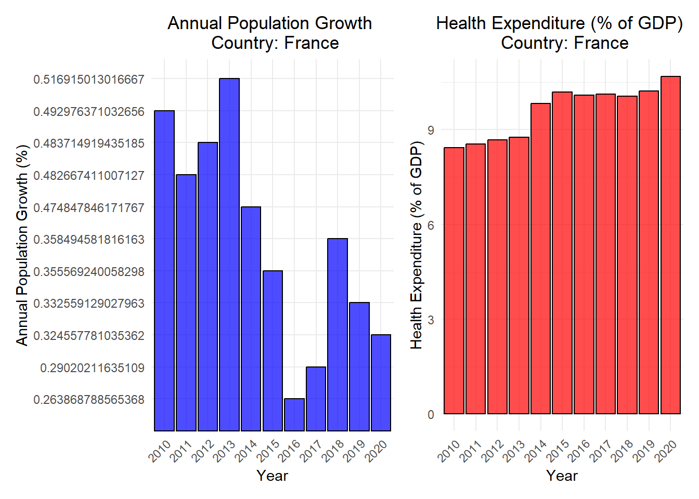
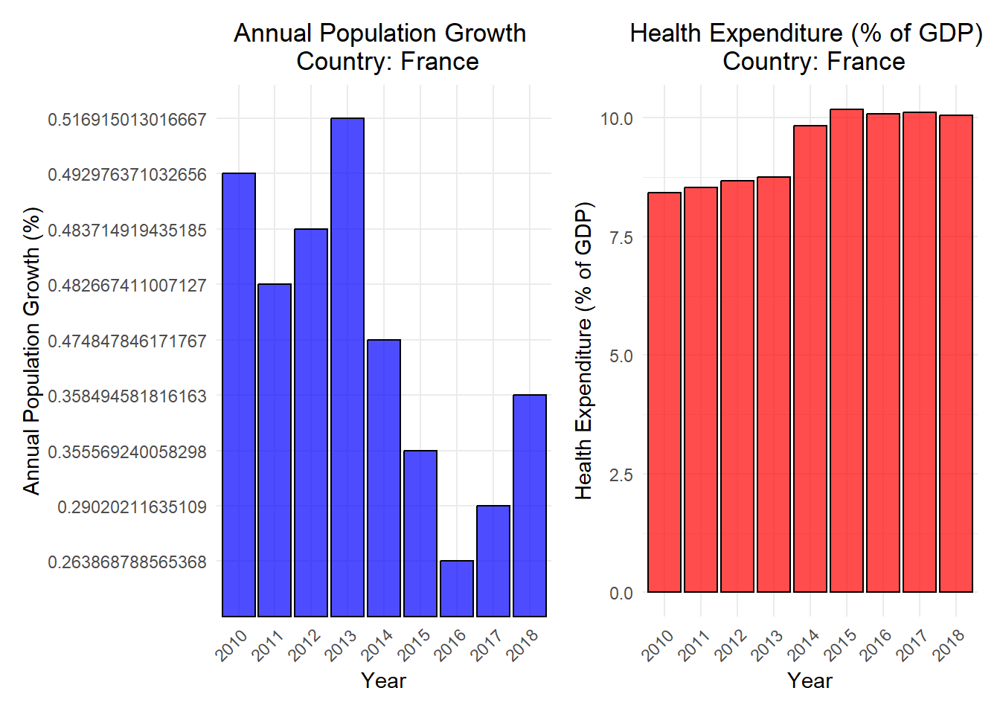
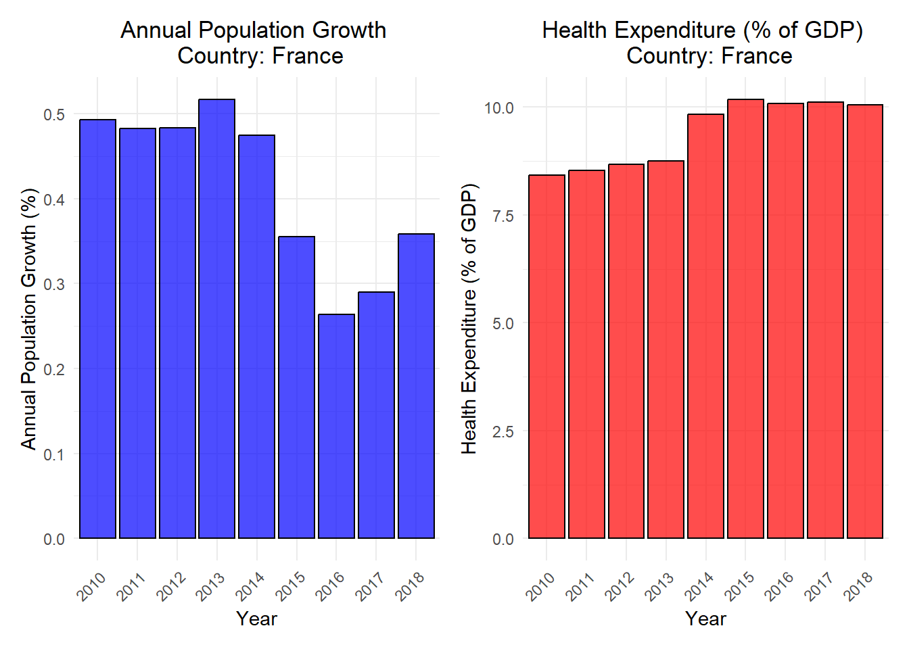
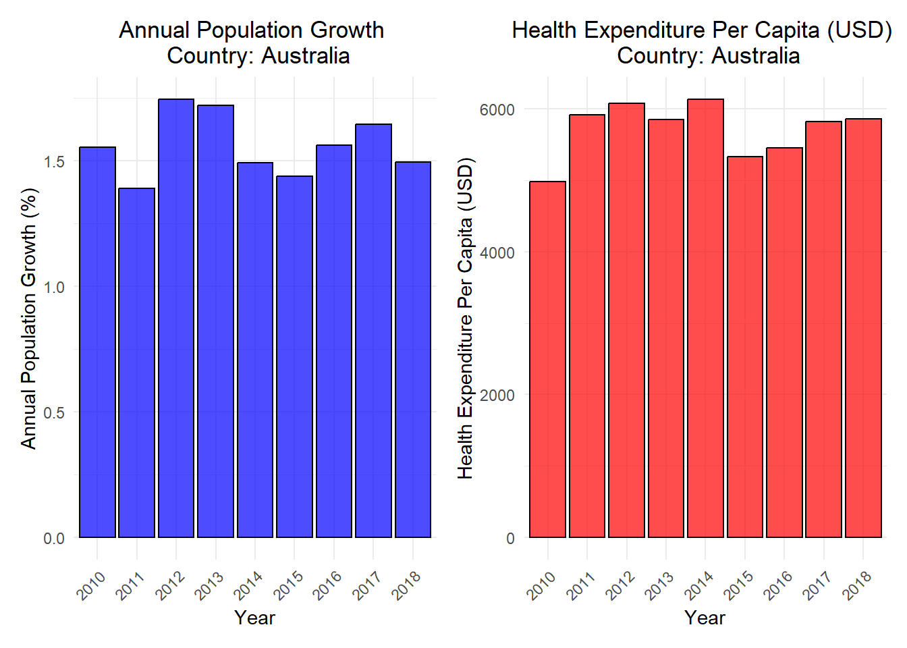
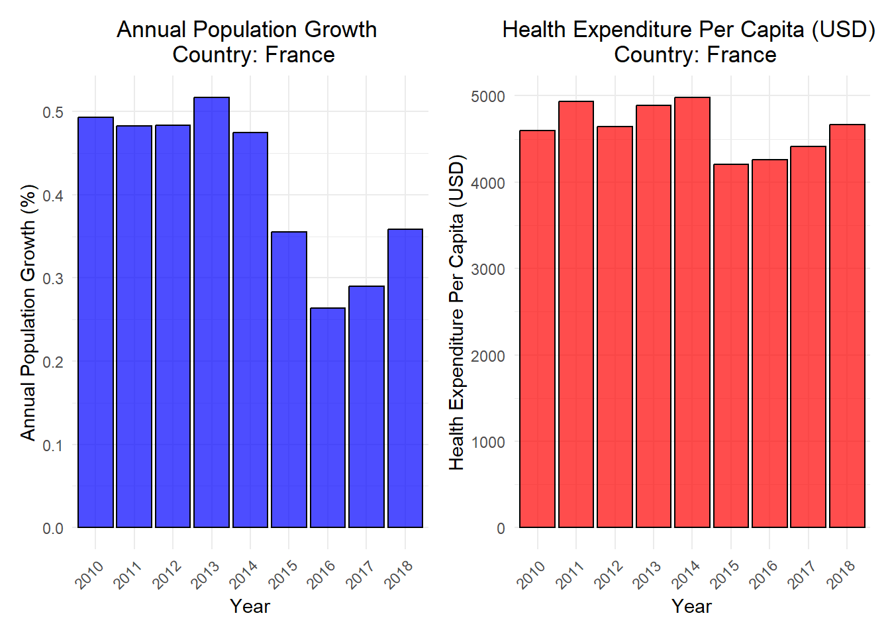

We will import the processed data from the processed-data folder which we is the cleaned and transformed dataset.
#Path to data. data_location <- here::here("data","processed-data","processeddata.rds")#load datamydata <-readRDS(data_location)
# sorting the dataset by timemydata <- mydata %>%arrange(Year) # sorting by year#splitting at 80% of the observationssplit_index <-floor(0.8*nrow(mydata))train <- mydata[1:split_index, ]test <- mydata[(split_index +1):nrow(mydata), ]
But first, let’s save the dataset
# converting all columns to numeric except CountryName, CountryCode, and SeriesCodetrain <- train %>%mutate(across(-c(CountryName, CountryCode, SeriesCode), as.numeric))
Warning: There were 1067 warnings in `mutate()`.
The first warning was:
ℹ In argument: `across(-c(CountryName, CountryCode, SeriesCode), as.numeric)`.
Caused by warning:
! NAs introduced by coercion
ℹ Run `dplyr::last_dplyr_warnings()` to see the 1066 remaining warnings.
#saving the train dataset as we will be using it in future as wellsaveRDS(train, file =here("data", "processed-data", "train-data.rds"))# converting all columns to numeric except CountryName, CountryCode, and SeriesCodetest <- test %>%mutate(across(-c(CountryName, CountryCode, SeriesCode), as.numeric))
Warning: There were 1033 warnings in `mutate()`.
The first warning was:
ℹ In argument: `across(-c(CountryName, CountryCode, SeriesCode), as.numeric)`.
Caused by warning:
! NAs introduced by coercion
ℹ Run `dplyr::last_dplyr_warnings()` to see the 1032 remaining warnings.
#saving the train dataset as we will be using it in future as wellsaveRDS(test, file =here("data", "processed-data", "test-data.rds"))
Data exploration through tables
Here we will present the summary stat for some of the interesting varible based on year 2010 for the OECD countries.
# Filtering data for the year 2010data_2010 <- train %>%filter(Year ==2010)# Create a summary table, excluding specific rowscountry_summary_table <- data_2010 %>%filter(!CountryName %in%c("Data from database: World Development Indicators", "OECD members", "Last Updated: 01/28/2025")) %>%select( CountryName, GDP_current_US, Population_total, Life_expectancy_at_birth_total_years, Physicians_per_1000_people, Hospital_beds_per_1000_people, Government_Effectiveness_Estimate, Control_of_Corruption_Estimate, Rule_of_Law_Estimate, Access_to_electricity__of_population, Unemployment_total__of_total_labor_force_modeled_ILO_estimate, Poverty_headcount_ratio_at_national_poverty_lines__of_population )# Generate the HTML tabletable_html <- country_summary_table %>%kable("html", escape =FALSE, digits =2) %>%kable_styling(full_width =FALSE, position ="left") %>%column_spec(1, bold =TRUE) %>%add_header_above(c(" "=1, "National Development Indicators"=11)) %>%kable_styling(bootstrap_options =c("striped", "hover"))# Save the table object as an RDS filerds_file <- here::here("results", "tables", "health_exp_2010.rds")saveRDS(table_html, file = rds_file)
Data exploration through figures
In this section, we will explore some of the variables and try to look at some of the similarity among the varibles.
First, we will see how “Health Expenditure as a Percentage of GDP Over Time (2010–2020)” is distributed over the years for top 5 OECD countries.The top 5 countries are calculated based on 2010 data. Note: The aggregate values visible as “OECD members” will not be used for analysis purpose. It is just for demonstration.
# Converting column to numeric before plottingtrain <- train %>%mutate(Current_health_expenditure__of_GDP =as.numeric(Current_health_expenditure__of_GDP))# Filtering top 5 countries based on 2010 health expendituretop_5_countries <- train %>%filter(Year ==2010) %>%arrange(desc(Current_health_expenditure__of_GDP)) %>%slice_head(n =5) %>%pull(CountryName) # Extracting country names# Filtering data for only 5 countries over timedata_filtered <- train %>%filter(CountryName %in% top_5_countries)y_breaks <-seq(min(data_filtered$Current_health_expenditure__of_GDP, na.rm =TRUE), max(data_filtered$Current_health_expenditure__of_GDP, na.rm =TRUE), length.out =4) # Creating the line plotp1<-ggplot(data_filtered, aes(x = Year, y = Current_health_expenditure__of_GDP, color = CountryName, group = CountryName)) +geom_line(size =1) +geom_point(size =2) +labs(title ="Current Health Expenditure as a % of GDP (2010–2020): Top 5 nations",x ="Year",y ="Health Expenditure (% of GDP)",color ="Country" ) +scale_y_continuous(breaks = y_breaks) +theme_minimal()
Warning: Using `size` aesthetic for lines was deprecated in ggplot2 3.4.0.
ℹ Please use `linewidth` instead.
ggsave(filename =here("results","figures", "health_expenditure_plot.png"), plot =last_plot(), # Saves the last plotted figurewidth =8, height =6, dpi =300)
Now, we will try to see if there is any relation between GDP per capita (current US) and current Health Expenditure as a % of GDP.
# Converting columns to numeric train <- train %>%mutate(Current_health_expenditure__of_GDP =as.numeric(Current_health_expenditure__of_GDP),GDP_per_capita_current_US =as.numeric(GDP_per_capita_current_US) )# Filtering data for the year 2010data_2010 <- train %>%filter(Year ==2010)# Creating scatter plotggplot(data_2010) +# Plot GDP per capita geom_point(aes(x = GDP_per_capita_current_US, y = Current_health_expenditure__of_GDP), color ="blue", alpha =0.7, size =3) +# Plot Health Expenditure geom_point(aes(x = GDP_per_capita_current_US, y = Current_health_expenditure__of_GDP), color ="red", alpha =0.7, size =3, shape =17) +# Shape 17 = Triangle# Adding a green regression linegeom_smooth(aes(x = GDP_per_capita_current_US, y = Current_health_expenditure__of_GDP), method ="lm", color ="green", se =FALSE, size =1) +# Labels and titlelabs(title ="Health Expenditure vs GDP Per Capita (2010)",x ="GDP Per Capita (Current US$)",y ="Current Health Expenditure (% of GDP)" ) +theme_minimal() +theme(plot.title =element_text(hjust =0.5))
`geom_smooth()` using formula = 'y ~ x'
Warning: Removed 3 rows containing non-finite outside the scale range
(`stat_smooth()`).
Warning: Removed 3 rows containing missing values or values outside the scale range
(`geom_point()`).
Removed 3 rows containing missing values or values outside the scale range
(`geom_point()`).

ggsave(filename =here("results","figures", "health_expenditure_gdp.png"), plot =last_plot(), # Saves the last plotted figurewidth =8, height =6, dpi =300)
`geom_smooth()` using formula = 'y ~ x'
Warning: Removed 3 rows containing non-finite outside the scale range (`stat_smooth()`).
Removed 3 rows containing missing values or values outside the scale range
(`geom_point()`).
Removed 3 rows containing missing values or values outside the scale range
(`geom_point()`).
Now, we will try to see if there is any relation between hospital beds per 1000 people and current Health Expenditure as a percentage of GDP.
# Converting columns to numerictrain <- train %>%mutate(Current_health_expenditure__of_GDP =as.numeric(Current_health_expenditure__of_GDP),Hospital_beds_per_1000_people =as.numeric(Hospital_beds_per_1000_people) )# Filtering data for the year 2010data_2010 <- train %>%filter(Year ==2010)# Creating scatter plotggplot(data_2010) +# Plot GDP per capita geom_point(aes(x = Hospital_beds_per_1000_people, y = Current_health_expenditure__of_GDP), color ="blue", alpha =0.7, size =3) +# Plot Health Expenditure geom_point(aes(x = Hospital_beds_per_1000_people, y = Current_health_expenditure__of_GDP), color ="red", alpha =0.7, size =3, shape =17) +# Shape 17 = Triangle# Adding green regression linegeom_smooth(aes(x = Hospital_beds_per_1000_people, y = Current_health_expenditure__of_GDP), method ="lm", color ="green", se =FALSE, size =1) +# Labels and titlelabs(title ="Health Expenditure vs GDP Per Capita (2010)",x ="Hospital beds per 1000 people",y ="Health Expenditure (% of GDP)" ) +theme_minimal() +theme(plot.title =element_text(hjust =0.5))
`geom_smooth()` using formula = 'y ~ x'
Warning: Removed 3 rows containing non-finite outside the scale range
(`stat_smooth()`).
Warning: Removed 3 rows containing missing values or values outside the scale range
(`geom_point()`).
Removed 3 rows containing missing values or values outside the scale range
(`geom_point()`).

ggsave(filename =here("results","figures", "hospital_per_bed.png"), plot =last_plot(), # Saves the last plotted figurewidth =8, height =6, dpi =300)
`geom_smooth()` using formula = 'y ~ x'
Warning: Removed 3 rows containing non-finite outside the scale range (`stat_smooth()`).
Removed 3 rows containing missing values or values outside the scale range
(`geom_point()`).
Removed 3 rows containing missing values or values outside the scale range
(`geom_point()`).
Let’s check if annual population growth shows any relation with current Health Expenditure as a percentage of GDP for Australia
# Filtering data for Australiaaustralia_data <- train %>%filter(CountryName =="Australia")# Histogram for Population Growthplot_pop_growth <-ggplot(australia_data, aes(x =as.factor(Year), y = Population_growth_annual_)) +geom_col(fill ="blue", color ="black", alpha =0.7) +labs(title ="Annual Population Growth \n Country: Australia",x ="Year",y ="Annual Population Growth (%)" ) +theme_minimal() +theme(plot.title =element_text(hjust =0.5),axis.text.x =element_text(angle =45, hjust =1))ggsave(filename =here("results","figures", "pop_growth_aus.png"), plot =last_plot(), # Saves the last plotted figurewidth =8, height =6, dpi =300)# Histogram for Health Expenditureplot_health_expenditure <-ggplot(australia_data, aes(x =as.factor(Year), y = Current_health_expenditure__of_GDP)) +geom_col(fill ="red", color ="black", alpha =0.7) +labs(title ="Health Expenditure (% of GDP) \n Country: Australia",x ="Year",y ="Health Expenditure (% of GDP)" ) +theme_minimal() +theme(plot.title =element_text(hjust =0.5),axis.text.x =element_text(angle =45, hjust =1)) ggsave(filename =here("results","figures", "health_exp_aus.png"), plot =last_plot(), width =8, height =6, dpi =300)# Combine both plots side by sideplot_pop_growth + plot_health_expenditure

We can not see a visible relation between these two factors. Let’s try it for France now
# Filter data for Francefrance_data <- train %>%filter(CountryName =="France")# Histogram for Population Growthplot_pop_growth <-ggplot(france_data, aes(x =as.factor(Year), y = Population_growth_annual_)) +geom_col(fill ="blue", color ="black", alpha =0.7) +labs(title ="Annual Population Growth \n Country: France",x ="Year",y ="Annual Population Growth (%)" ) +theme_minimal() +theme(plot.title =element_text(hjust =0.5),axis.text.x =element_text(angle =45, hjust =1)) ggsave(filename =here("results","figures", "pop_growth_france.png"), plot =last_plot(), width =8, height =6, dpi =300)# Histogram for Health Expenditureplot_health_expenditure <-ggplot(australia_data, aes(x =as.factor(Year), y = Current_health_expenditure__of_GDP)) +geom_col(fill ="red", color ="black", alpha =0.7) +labs(title ="Health Expenditure (% of GDP) \n Country: France",x ="Year",y ="Health Expenditure (% of GDP)" ) +theme_minimal() +theme(plot.title =element_text(hjust =0.5),axis.text.x =element_text(angle =45, hjust =1))ggsave(filename =here("results","figures", "health_exp_france.png"), plot =last_plot(), width =8, height =6, dpi =300)# Combining both plots side by sideplot_pop_growth + plot_health_expenditure

We can not observe a distinct relation between the two variable, we can observe that the Health Expenditure (% of GDP) variable also show less fluctuation across the years for multiple countries. Lets see if Health Expenditure Per Capita (USD) over the Years shows any reation with annual population growth.
# Histogram for Population Growthplot_pop_growth <-ggplot(australia_data, aes(x =as.factor(Year), y = Population_growth_annual_)) +geom_col(fill ="blue", color ="black", alpha =0.7) +labs(title ="Annual Population Growth \n Country: Australia",x ="Year",y ="Annual Population Growth (%)" ) +theme_minimal() +theme(plot.title =element_text(hjust =0.5),axis.text.x =element_text(angle =45, hjust =1)) # Histogram for Health Expenditure Per Capita (Current USD)plot_health_expenditure <-ggplot(australia_data, aes(x =as.factor(Year), y = Current_health_expenditure_per_capita_current_US)) +geom_col(fill ="red", color ="black", alpha =0.7) +labs(title ="Health Expenditure Per Capita (USD) \n Country: Australia",x ="Year",y ="Health Expenditure Per Capita (USD)" ) +theme_minimal() +theme(plot.title =element_text(hjust =0.5),axis.text.x =element_text(angle =45, hjust =1)) # Rotate x-axis labelsggsave(filename =here("results","figures", "health_exp_per_capita_aus.png"), plot =last_plot(), width =8, height =6, dpi =300)# Combine both plots side by sideplot_pop_growth + plot_health_expenditure

The Health Expenditure Per Capita (USD) varriable in fact shows more variation and also show some connections with annual population growth.
# Histogram for Population Growthplot_pop_growth <-ggplot(france_data, aes(x =as.factor(Year), y = Population_growth_annual_)) +geom_col(fill ="blue", color ="black", alpha =0.7) +labs(title ="Annual Population Growth \n Country: France",x ="Year",y ="Annual Population Growth (%)" ) +theme_minimal() +theme(plot.title =element_text(hjust =0.5),axis.text.x =element_text(angle =45, hjust =1)) # Rotate x-axis labels# Histogram for Health Expenditure Per Capita (Current USD)plot_health_expenditure <-ggplot(france_data, aes(x =as.factor(Year), y = Current_health_expenditure_per_capita_current_US)) +geom_col(fill ="red", color ="black", alpha =0.7) +labs(title ="Health Expenditure Per Capita (USD) \n Country: France",x ="Year",y ="Health Expenditure Per Capita (USD)" ) +theme_minimal() +theme(plot.title =element_text(hjust =0.5),axis.text.x =element_text(angle =45, hjust =1)) ggsave(filename =here("results","figures", "health_exp_per_capita_france.png"), plot =last_plot(), width =8, height =6,dpi =300)# Combine both plots side by sideplot_pop_growth + plot_health_expenditure

The results for Australia can also confirmed for France, we may be able to use Health Expenditure Per Capita (USD) as a dependent variabe in our future analysis.
# Converting column to numeric before plottingtrain <- train %>%mutate(Current_health_expenditure_per_capita_current_US =as.numeric(Current_health_expenditure_per_capita_current_US))# Filtering top 5 countries based on 2010 per capita health expendituretop_5_countries <- train %>%filter(Year ==2010) %>%arrange(desc(Current_health_expenditure_per_capita_current_US)) %>%slice_head(n =5) %>%pull(CountryName) # Extracting country names# Filtering data for only 5 countries over timedata_filtered <- train %>%filter(CountryName %in% top_5_countries)y_breaks <-seq(min(data_filtered$Current_health_expenditure_per_capita_current_US, na.rm =TRUE), max(data_filtered$Current_health_expenditure_per_capita_current_US, na.rm =TRUE), length.out =4) # Creating the line plotp2<-ggplot(data_filtered, aes(x = Year, y = Current_health_expenditure_per_capita_current_US, color = CountryName, group = CountryName)) +geom_line(size =1) +geom_point(size =2) +labs(title ="Current Per Capita Health Expenditure (2010–2020): Top 5 nations",x ="Year",y ="Per capita Health Expenditure (USD)",color ="Country" ) +scale_y_continuous(breaks = y_breaks) +theme_minimal() ggsave(filename =here("results","figures", "per_capita_health_expenditure_plot.png"), plot =last_plot(), # Saves the last plotted figurewidth =8, height =6, dpi =300)
saving the health expenditure plot
combined_plot <- p1 / p2 +plot_layout(widths =c(1, 1)) +# Equal width for both plotsplot_annotation(tag_levels ='A')ggsave(filename =here("results", "figures", "combined_health_expenditure_plots.png"),plot = combined_plot,width =10, # width as neededheight =8, # height as neededdpi =300)
EDA (part2)
This is the EDA analysis performed for part 3 of the project.
# Define datasetdf <- data_2010df$Current_health_expenditure_per_capita_current_US <-as.numeric(df$Current_health_expenditure_per_capita_current_US)df$GDP_growth_annual_ <-as.numeric(df$GDP_growth_annual_)df$Income_share_held_by_lowest_20 <-as.numeric(df$Income_share_held_by_lowest_20)df$Control_of_Corruption_Estimate <-as.numeric(df$Control_of_Corruption_Estimate)df$Life_expectancy_at_birth_total_years <-as.numeric(df$Life_expectancy_at_birth_total_years)df$Literacy_rate_adult_total__of_people_ages_15_and_above <-as.numeric(df$Literacy_rate_adult_total__of_people_ages_15_and_above)df$Trade__of_GDP <-as.numeric(df$Trade__of_GDP)df$Foreign_direct_investment_net_inflows_BoP_current_US <-as.numeric(df$Foreign_direct_investment_net_inflows_BoP_current_US)df$Age_dependency_ratio__of_workingage_population <-as.numeric(df$Age_dependency_ratio__of_workingage_population)# Function to create a scatter plot with correlationcreate_corr_plot <-function(x_var, df, point_color) { cor_value <-round(cor(df[[x_var]], df$Current_health_expenditure_per_capita_current_US, use ="complete.obs"), 2)ggplot(df, aes_string(x = x_var, y ="Current_health_expenditure_per_capita_current_US")) +geom_point(color = point_color, alpha =0.6) +# Set color based on inputgeom_smooth(method ="lm", color ="red", se =FALSE) +labs(title =paste("Correlation:", cor_value), x = x_var, y ="Health Expenditure per Capita") +theme_minimal()}# Generate individual plots with different colorsplot1 <-create_corr_plot("GDP_growth_annual_", df, "blue")
Warning: `aes_string()` was deprecated in ggplot2 3.0.0.
ℹ Please use tidy evaluation idioms with `aes()`.
ℹ See also `vignette("ggplot2-in-packages")` for more information.
Warning: Removed 38 rows containing non-finite outside the scale range
(`stat_smooth()`).
Warning: Removed 38 rows containing missing values or values outside the scale range
(`geom_point()`).
`geom_smooth()` using formula = 'y ~ x'
Warning: Removed 3 rows containing non-finite outside the scale range
(`stat_smooth()`).
Warning: Removed 3 rows containing missing values or values outside the scale range
(`geom_point()`).
`geom_smooth()` using formula = 'y ~ x'
Warning: Removed 3 rows containing non-finite outside the scale range (`stat_smooth()`).
Removed 3 rows containing missing values or values outside the scale range
(`geom_point()`).
`geom_smooth()` using formula = 'y ~ x'
Warning: Removed 3 rows containing non-finite outside the scale range (`stat_smooth()`).
Removed 3 rows containing missing values or values outside the scale range
(`geom_point()`).